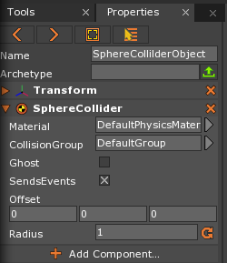
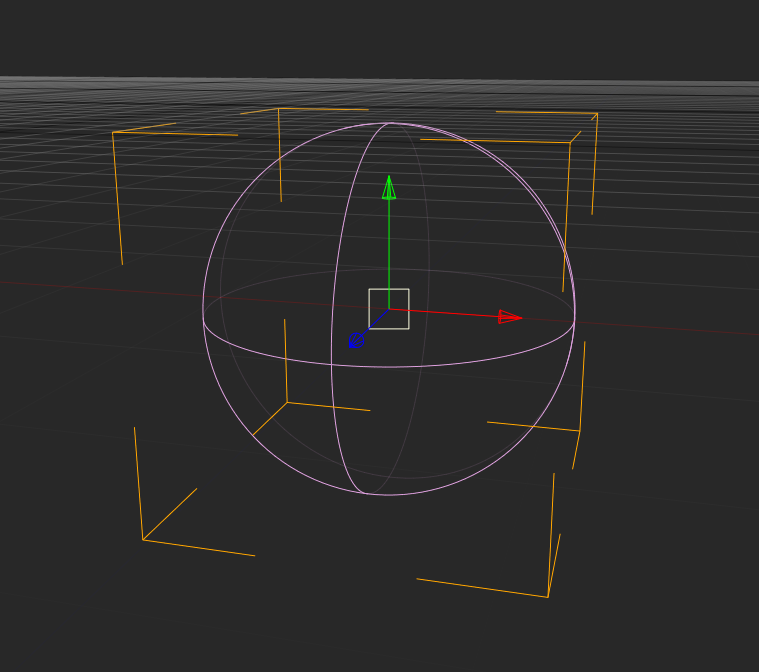
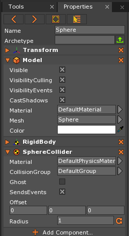
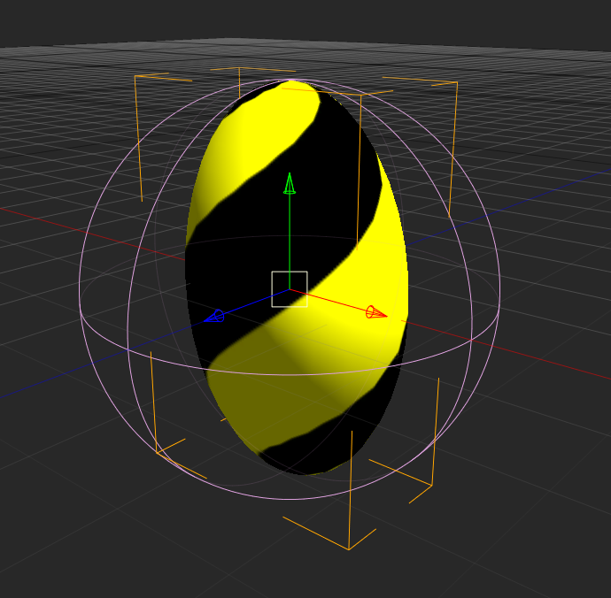
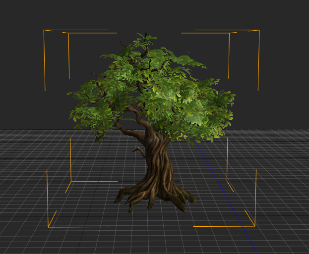
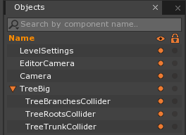
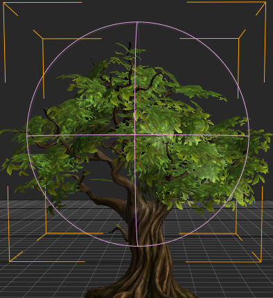
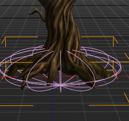
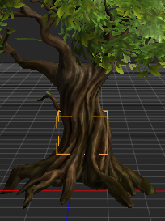
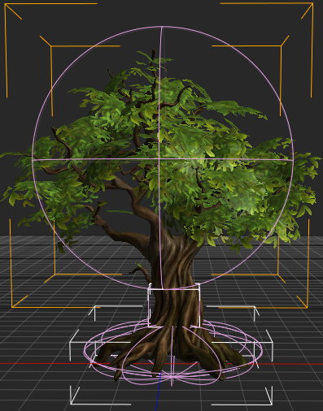

SphereCollider
The SphereCollider component is one of the primitive Collider types available in the Zero Engine. It takes the shape of a sphere scaled by a radius property set by the user. The SphereCollider component can be added to any object as long as it has a Transform component.
Common Uses
- Defining collision boundaries of either spherical objects or parts of an object where a sphere provides the most efficient and/or complete coverage.
- Defining the boundaries for a spherical-shaped
Regionwith aPhysicsEffectattached to it. - Defining the boundaries for a spherical-shaped, collision-based trigger volume that causes a
CollisionEventto be dispatched.
Using SphereCollider
Creating a SphereCollider
The In-Editor properties for the SphereCollider can be seen in the following picture, where a SphereCollider component has been placed on object with just a Transform:

When this object is selected and viewed in the Level Window, the only thing that will be visible are the DebugDraw lines marking the boundaries of the SphereCollider; that is, the area in which collision will be resolved if this Collider comes into contact with another Collider (assuming the Colliders belong to the default CollisionGroup ).

Applying SphereCollider to an Object
The SphereCollider is best used for models that are spherically-shaped or for parts of an object where a sphere provides the best coverage. SphereCollider is the most efficient Collider available to the user in Zero Engine, making it a valuable tool when performance is paramount.
SphereCollider on a Sphere
A uniformly-scaled Sphere is the ideal type of object on which to use a SphereCollider as it will fit the size and scale of the sphere perfectly. If one creates a Sphere object, the Zero Editor anticipates the need for a SphereCollider and provides one already attached to the Sphere object, as can be seen here:

The SphereCollider will scale along with any changes made to the size of the Sphere as long the size of the Sphere is scaled uniformly. The SphereCollider will always keep its spherical shape no matter what is done to the Sphere object to which it is attached. The following screenshot shows what happens when a Sphere object is non-uniformly scaled:

One should immediately be able to see that while the Sphere model has been distorted out of its previous shape, the SphereCollider (represented by pink debug lines) has retained the same perfectly spherical shape it had before changing the object’s scale. If a Collider is needed to match up with a non-uniformly scaled sphere or ellipsoid shape, the Zero Engine provides the EllipsoidCollider component.
SphereCollider on a Non-Spherical Object
To look at how a SphereCollider can be applied to an object other than a Sphere, a three-dimensional model of a tree will be used:

Looking at the tree, it might not immediately be clear how SphereColliders could be put to use here. If this tree model is one of dozens in a forest, however, the user will almost assuredly want to use primitive Colliders that approximate the collision of the tree instead of using the tree’s mesh to create an extremely precise Collider (though if the game called for it, one could easily make such a Collider using the MeshCollider component ).
What would be much more efficient is the use of three primitive types of Colliders –SphereCollider, EllipsoidCollider, and BoxCollider– to attach to child objects that will belong to tree object. The tree would then have the collision boundaries of the child objects while being very memory efficient. This is done by:
- creating objects with only a Transform component attached to hold the Collider component
- parenting them to the tree object
- adjusting their properties so they cover the entire tree
The following screenshots will illustrate this process:
The Object Window after creating and parenting the objects with Collider components attached

The SphereCollider used for the branches of the tree as seen in the Level Window

The EllipsoidCollider used for the roots of the tree as seen in the Level Window

The BoxCollider used for the trunk of the tree as seen in the Level Window

The Tree object with all three Colliders visible (and almost every part of the model covered) in the Level Window

While the collision is clearly not exact according to the shape of the model, the Colliders as they are placed would be sufficient in a level filled with dozens of the same tree.